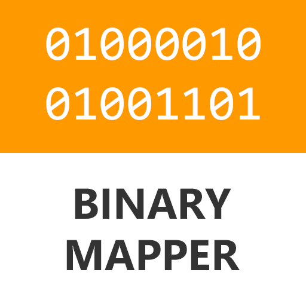

BinaryMapper 

BinaryMapper is a simple cross-platform library to parse binary files into their respective data structures in C#. It uses reflection to understand structures, and reads the data into the structure from a seekable stream.
Currently the library supports reading Minidumps and executables based on the structures published on MSDN. Spporting other file formats is a case of definining the structures and pointing the library at them.
BinaryMapper.Core 
This example shows how to load a binary stream into structures you have defined.
public class MYFILE_HEADER_STRUCT
{
public uint Signature;
public uint Version;
public uint SomeOffset;
public uint NumberOfEntries;
[ArraySize(nameof(NumberOfEntries))]
public MYFILE_STREAM_STRUCT[] MyStructures;
}
public class MYFILE_STREAM_STRUCT
{
public uint Flags;
}
var stream = File.OpenRead("myfile.bin");
var streamBinaryMapper = new StreamBinaryMapper();
var header = streamBinaryMapper.ReadObject<MYFILE_HEADER_STRUCT>(stream);
BinaryMapper.Windows.Minidump 
This example shows how to extract the names of the loaded modules from a memory dump stream.
var stream = File.OpenRead("minidump.dmp");
var minidumpMapper = new MinidumpMapper();
var minidump = minidumpMapper.ReadMinidump(stream);
Console.WriteLine($"This minidump is of type {minidump.Header.Flags}");
foreach (var module in minidump.Modules)
{
Console.WriteLine(module.Key);
}
BinaryMapper.Windows.Executable 
This example shows how to load an executable, find out whether it is 32 or 64 bit, and which version of Windows it targets.
var stream = File.OpenRead("executable.exe");
var executableMapper = new ExecutableMapper();
var executable = executableMapper.ReadExecutable(stream);
if (executable.OptionalHeader != null)
{
Console.WriteLine($"32-bit executable for Windows {executable.OptionalHeader.OperatingSystemVersion}");
}
else
{
Console.WriteLine($"64-bit executable for Windows {executable.OptionalHeader64.OperatingSystemVersion}");
}